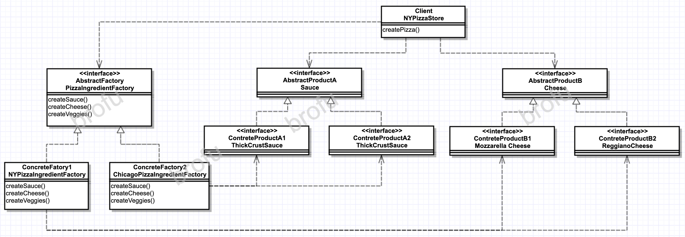

Definition
Abstract Factory Pattern 提供一个接口，用于创建相关或依赖对象的家族，而不需要明确指定具体类。
UML Graph

Thinkings
- 抽象工厂的方法经常以工厂方法来实现
- Factory Method V.S. Abstract Factory
| Item\Pattern | Factory Method | Abstract Factory |
|---|---|---|
| Implementation |
|
|
| Products Number | 1 | N |
- 所有工厂模式都通过减少应用程序和具体类之间的依赖，促进松耦合